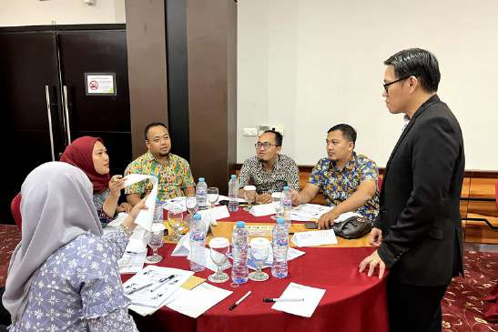

- Home
- Consulting & Advisory
Consulting & Advisory
Menciptakan aktivitas korporat dengan sistem dan prosedur yang mendukung pencapaian target.

MBV Training and Consulting
Membantu pendampingan korporat yang terstruktur dengan sistem dan prosedur yang efektif merupakan proses berkelanjutan untuk mendukung pencapaian Rencana Bisnis Perusahaan.
Kami membantu perusahaan Anda dalam menyusun dan mengelola aktivitas ini dengan memahami model bisnis perusahaan, mengidentifikasi pelanggan, serta mengenali pemangku kepentingan yang berperan dalam operasional bisnis.
Dengan pendekatan yang berbasis analisis mendalam, kami mengembangkan strategi layanan, sistem operasional, dan prosedur bisnis yang memungkinkan perusahaan beroperasi dengan lebih efisien, produktif, dan berdaya saing tinggi.
Consulting
Menciptakan kegiatan perusahaan dengan memiliki sistem dan prosedur yang baik, guna mendukung pencapaian Rencana Bisnis Perusahaan, memerlukan proses yang berkelanjutan. Kami membantu perusahaan Anda dalam mempersiapkan kegiatan dimaksud, diantaranya dengan memahami model bisnis perusahaan, memahami konsumen yang dilayani, dan mengidentifikasi berbagai pihak terkait yang mendukung operasional perusahaan, untuk menciptakan strategi pelayanan dengan sistem dan prosedur yang memungkinkan perusahaan beroperasi secara efisien dan efektif.
Advisory
Kami memberikan pelatihan bidang kewirausahaan dan sebagai tindak lanjut dari pelatihan dimaksud, kami memberikan pendampingan (advisory) kepada Anda yang berencana untuk menjadi seorang pengusaha (entrepreneur), dimulai dari persiapan pada tahap awal (perencanaan) sampai dengan saat Anda memulai usaha yang telah Anda rencanakan tersebut.
Layanan konsultasi
Empower your business with our services.
Konsultan Perbankan
Konsultasi dan pengembangan strategi operasional bagi institusi perbankan untuk meningkatkan efisiensi, manajemen risiko, dan layanan keuangan.
Konsultan Asuransi
Pendampingan bisnis dan operasional bagi perusahaan asuransi untuk meningkatkan sistem kerja, layanan nasabah, dan pertumbuhan bisnis.
Konsultan Pembuatan Standar Operasional Prosedur (SOP)
Jasa penyusunan Standar Operasional Prosedur (SOP) untuk membantu perusahaan memiliki sistem kerja yang terstruktur, efisien, dan profesional.
Konsultan Agribisnis dan Pertanian Terpadu (Integrated Farm)
Model pengembangan pertanian yang mengintegrasikan produksi, pengolahan, distribusi, dan pemasaran dalam satu sistem yang efisien dan berkelanjutan.
Konsultan Minyak dan Gas (Oil and Gas)
Sektor industri yang mencakup kegiatan eksplorasi, produksi, pengolahan, distribusi, dan pemasaran sumber daya minyak dan gas bumi. Industri ini berperan strategis dalam mendukung ketahanan energi, dan pertumbuhan ekonomi.
Konsultan Manajemen Investasi
Proses profesional dalam mengelola aset dan portofolio investasi untuk mencapai pertumbuhan nilai, optimalisasi imbal hasil, serta pengelolaan risiko secara terukur.
Konsultan Kapal Penangkapan Ikan
Proses perancangan dan konstruksi kapal yang dirancang khusus untuk kegiatan penangkapan ikan, dengan memperhatikan standar keselamatan, efisiensi operasional, dan daya tahan di berbagai kondisi perairan.
Konsultan Perikanan
Layanan profesional yang mendukung pengembangan usaha perikanan tangkap maupun budidaya melalui perencanaan strategis, peningkatan produktivitas, serta pengelolaan operasional yang efisien.
Konsultan Industri Konveksi
Layanan profesional yang membantu pelaku usaha konveksi dalam meningkatkan efisiensi produksi, kualitas produk, serta sistem manajemen operasional.
Melayani konsultasi di bidang
Jasa konsultasi di bidang pengembangan sumber daya manusia (SDM), manajemen bisnis, pengolahan big data, coaching, mentoring, dan assessment.
Siap Meningkatkan Kompetensi Tim Anda?
Konsultasikan kebutuhan pelatihan perusahaan Anda bersama tim MBV Training & Consulting sekarang juga.